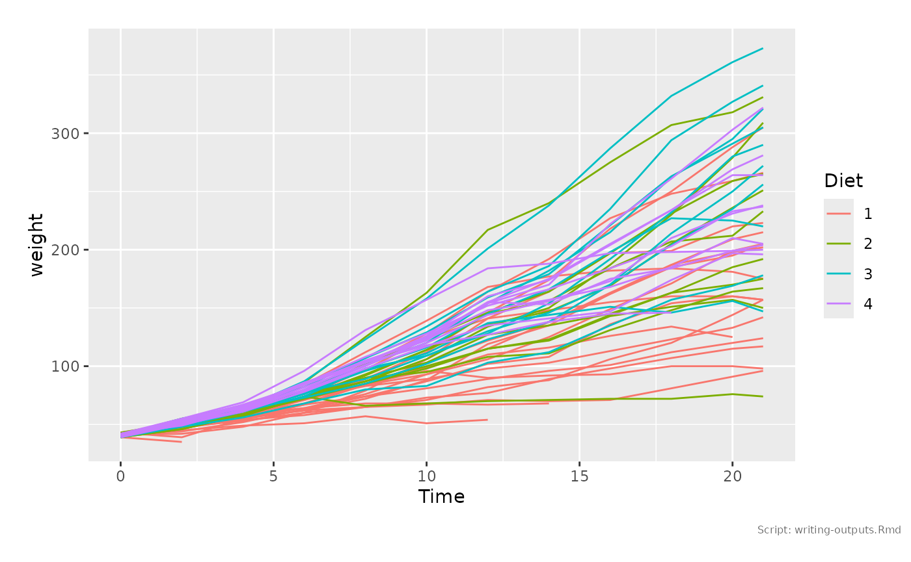
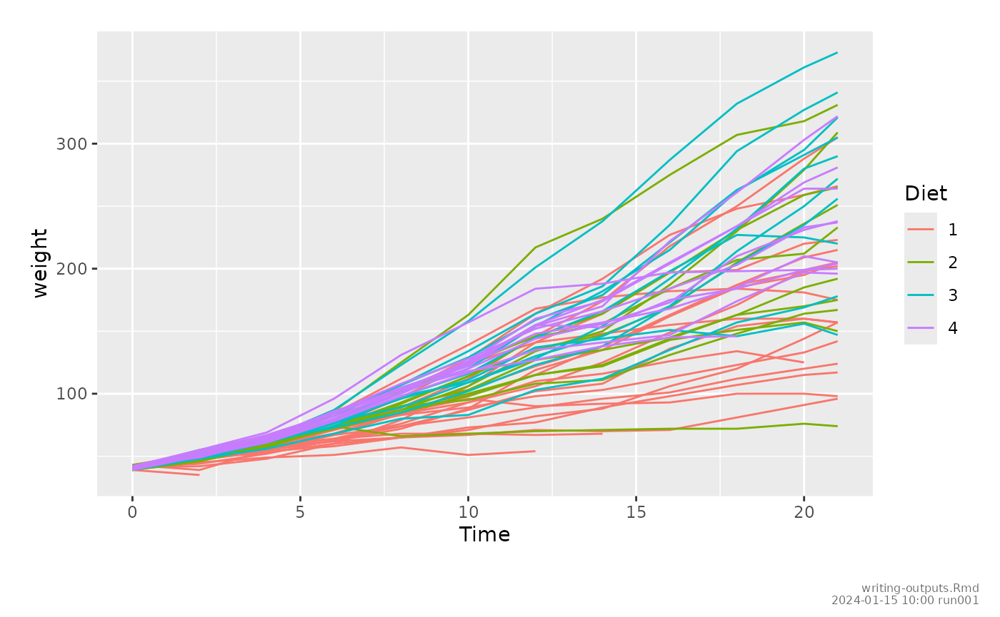
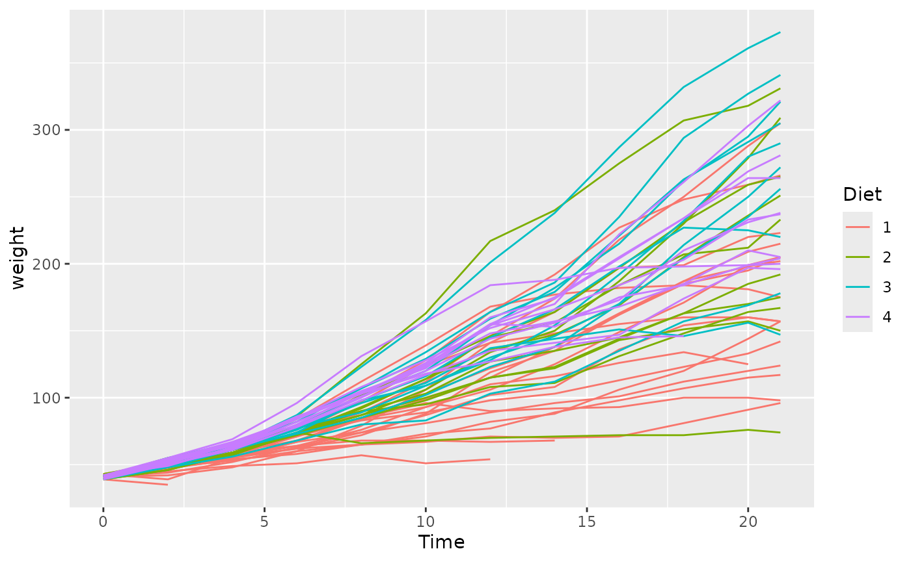
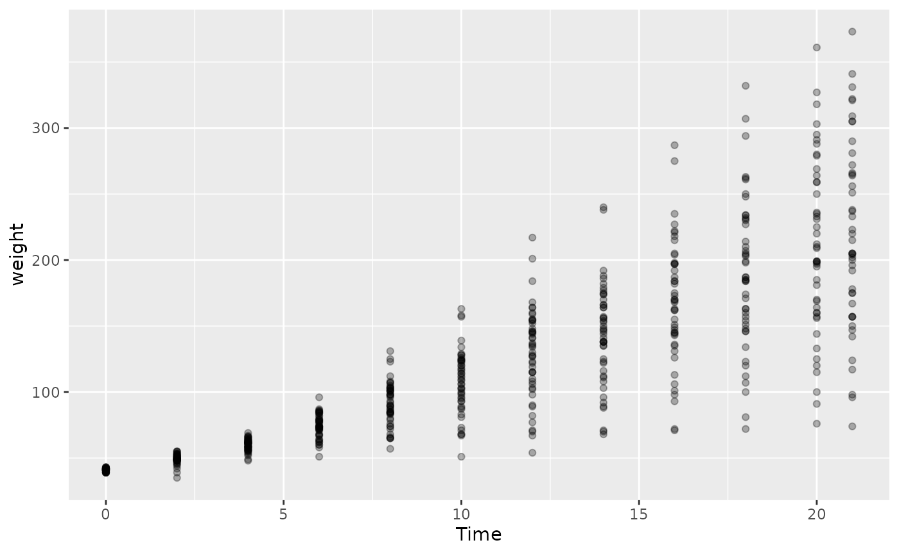
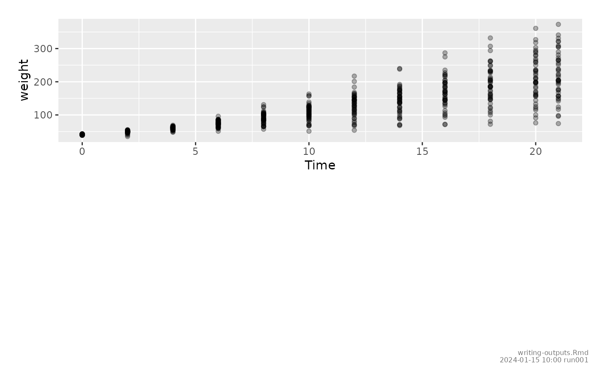

Writing Outputs with ggwrite, ftwrite, and lwrite
Source:vignettes/writing-outputs.Rmd
writing-outputs.RmdLearning objectives
By the end of this vignette you will be able to:
- Use
ggwrite()to saveggplotobjects (single plots or lists of plots) to PNG and/or PDF files. - Use
ftwrite()to saveflextableobjects to PNG, HTML, DOCX, PPTX, or RDS files, including writing a named list of tables to multiple files at once. - Use
lwrite()to save a list of mixed objects (plots, tables, etc.) in one call, dispatching each element to the appropriate writer function. - Add a stamp to your outputs using the
script,time, andmodelarguments, so every figure/table clearly shows which script produced it, when, and for which model. - Control output behavior globally using a flag variable
(e.g.
writeOutput), so the same script can be used interactively (viewing results on screen) and in batch mode (saving all outputs to disk). - Organize output files using
fun.path/subdir, so outputs are written into a structured directory tree rather than a single flat folder.
library(tracee)
library(ggplot2)
library(flextable)
library(data.table)
#>
#> Attaching package: 'data.table'
#> The following object is masked from 'package:base':
#>
#> %notin%
## Flip this to TRUE to actually write files to disk when running this
## vignette interactively.
writeOutput <- FALSE
## Arguments used throughout this vignette to "stamp" outputs - see the
## Stamping section below.
script <- "writing-outputs.Rmd"
time <- "2024-01-15 10:00"
model <- "run001"1. ggwrite(): saving (and viewing) plots
ggwrite() writes a single plot, or a list of plots, to
one or more files. If save = FALSE the plot is only
displayed (useful during interactive development); if
save = TRUE, it is written to disk.
A single plot
data(ChickWeight)
p1 <- ggplot(ChickWeight, aes(Time, weight, group = Chick, colour = factor(Diet))) +
geom_line() +
labs(colour = "Diet")
## View on screen (save = FALSE is the default behavior we use throughout
## this vignette via `writeOutput`)
ggwrite(p1, file = "chickweight_lines1.png", save = writeOutput)
Stamping: script, time, and
model
Passing script adds a caption (via
ggstamp()) to the plot, showing the script name, a
timestamp, and - if supplied - the model identifier. This is invaluable
for traceability: anyone looking at a saved figure can immediately see
which script, run, and model produced it.
-
script: character string identifying the script that generated the plot. -
time: a timestamp string. If omitted whilescriptis supplied, the current time is used automatically; passtime = ""to omit the timestamp from the stamp entirely. -
model: a model name/identifier, included in the stamp and also usable byfun.pathto organize output directories (see the final section below).
ggwrite(p1, script = script, file = "chickweight_lines2.png",
canvas = "wide", save = writeOutput)
## Including time and model in the stamp
ggwrite(p1, script = script, time = time, model = model,
file = "chickweight_lines3.png", save = writeOutput)
Multiple formats and canvas sizes at once
## Two file formats from one call
ggwrite(p1, file = "chickweight_lines4.png",
formats = c("png", "pdf"), save = writeOutput)
## Two canvas sizes from one call -> chickweight_small.png, chickweight_large.png
ggwrite(p1, file = "chickweight_lines5.png",
canvas = list(small = "standard", large = "wide"),
save = writeOutput)
Lists of plots
A named list of plots can be written either as separate files (one per element) or combined into a single multi-page PDF.
p2 <- ggplot(ChickWeight, aes(Time, weight)) +
geom_point(alpha = 0.3)
plots <- list(lines = p1, points = p2)
## Separate files: chickweight_lines.png, chickweight_points.png
ggwrite(plots, file = "chickweight.png", use.names = TRUE, save = writeOutput)

## Single multi-page PDF: chickweight.pdf (2 pages)
ggwrite(plots, file = "chickweight.pdf", onefile = TRUE, save = writeOutput)

2. ftwrite(): saving flextable objects
ftwrite() writes flextable tables to common
document/image formats: png, html,
docx, pptx, or rds. Like
ggwrite(), it accepts a single flextable
object or a named list of them.
ft1 <- flextable(head(ChickWeight, 10))
## Write a single table, format inferred from the file extension
ftwrite(ft1, file = "chickweight_table.docx", save = writeOutput)Stamping a table with script, time, and
model
Just like ggwrite(), ftwrite() accepts
script, time, and model to add a
traceability stamp to the output.
ftwrite(ft1, script = script, time = time, model = model,
file = "chickweight_table_1.docx", save = writeOutput)A list of tables
ft2 <- flextable(
as.data.frame(summary(ChickWeight))
[, 1:2])
ft2 <- flextable(
as.data.frame(ChickWeight[1:2,1:2]))
ftables <- list(raw = ft1, summary = ft2)
lapply(ftables,class)
#> $raw
#> [1] "flextable"
#>
#> $summary
#> [1] "flextable"
## Creates chickweight_tables_raw.docx, chickweight_tables_summary.docx
ftwrite(tables, file = "chickweight_tables_3.docx", save = writeOutput)Note: writing to png requires a working headless-browser
backend (webshot2/chromote). If that is not
available in your environment, prefer html or
docx output, which rely only on pure-R packages.
3. lwrite(): writing a list of mixed objects in one
call
Often an analysis produces a mixture of outputs - some
plots, some tables - that you want to save together.
lwrite() takes a named list and dispatches each element to
the appropriate writer (ggwrite() for plots,
ftwrite() for flextable objects, and so on),
using the list names to generate file names.
outputs <- list(
weight_trajectories = p1,
weight_by_time = p2,
summary_table = ft2
)
## Each element is written using the function appropriate for its class,
## with file names derived from the list names, stamped consistently with
## script, time, and model.
lwrite(outputs,
script = script, time = time, model = model,
save = writeOutput)

This is particularly useful at the end of an analysis script: collect
every plot and table you want to export into a single named list, then
call lwrite() once instead of calling
ggwrite()/ftwrite() separately for each
object.
4. Controlling output location
ggwrite() and ftwrite() accept
fun.path/subdir arguments, and
lwrite() accepts path.format. These let you
organize outputs into a structured directory tree (e.g. grouped by model
or script) rather than a single flat folder. A path format is a template
using the placeholders %model, %script and
%name, where / separates directory levels. See
?pathFormat for details and for how to supply a custom path
function.
Summary
| Function | Object type(s) | Formats |
|---|---|---|
ggwrite |
ggplot, gtable, list thereof |
png, pdf
|
ftwrite |
flextable, list thereof |
png, html, docx,
pptx, rds
|
lwrite |
Named list of mixed objects | Dispatches to ggwrite/ftwrite
|
Using a single writeOutput flag (or similar) to control
the save/show arguments across all three
functions lets you switch seamlessly between interactive exploration and
reproducible batch output generation.